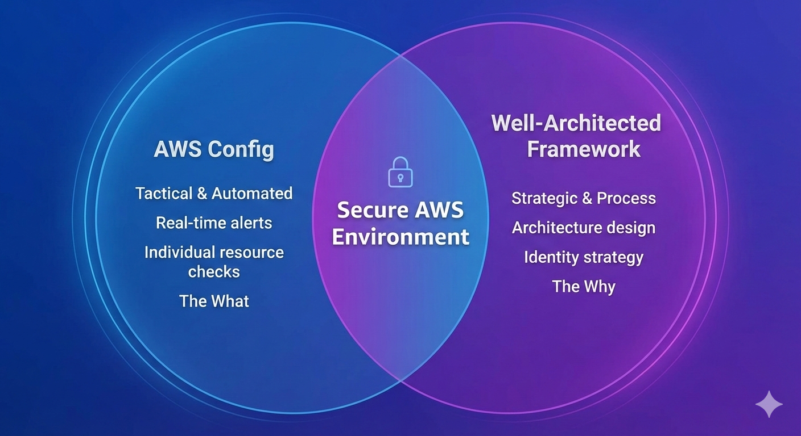
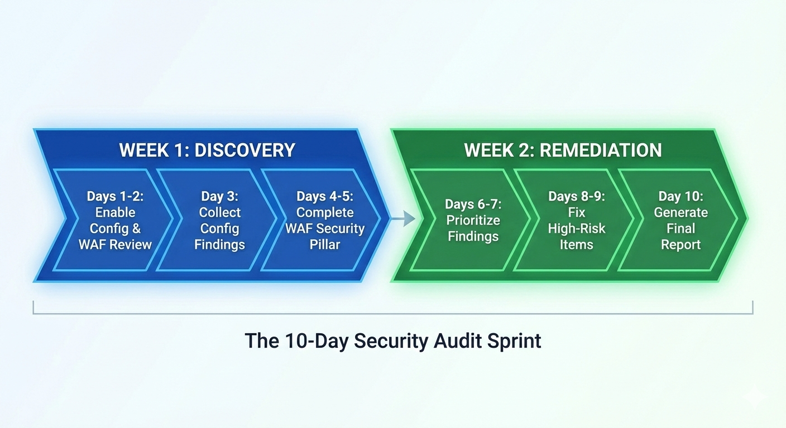
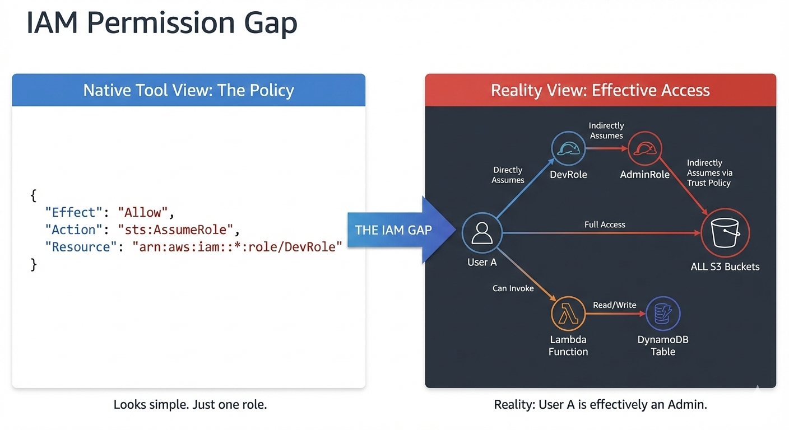

The good news? In 2026, AWS gives you powerful, built-in tools to conduct a solid baseline security review. You can establish a professional security baseline in-house using two native tools: AWS Config and the AWS Well-Architected Framework. Here is the playbook for conducting your first AWS security audit without stalling your roadmap.
1. AWS Config: Your Automated Compliance Detective
AWS Config is your automated compliance detective. It continuously monitors your AWS resource configurations and evaluates them against rules you define. For a startup, this is gold—it's like having a junior security analyst working 24/7, flagging issues as they occur.
The High-Signal Configuration
Setting up AWS Config is straightforward, but the key is to not boil the ocean. Enable Config in your production account first. Start with AWS Managed Rules. As of early 2026, AWS maintains hundreds of pre-built rules, so don't reinvent the wheel.
Managed Rules:
For a security-focused audit, ensure you are recording:
- IAM (Users, Groups, Roles, Policies)
- EC2 (Instances, Security Groups, Network ACLs)
- S3 (Buckets, Account Level Public Access)
- RDS (Instances, Clusters, Snapshots)
Pro-Tip: 2026 Cost Optimization
AWS Config costs can spike if you record ephemeral resources (like Lambda versions or EC2 Spot instances).
The Fix: Set your "Trigger Type" to Configuration changes rather than periodic evaluation. You'll get an alert the moment a resource becomes non-compliant without paying for redundant checks on resources that haven't changed.
Prioritizing Config Rules for Your AWS Security Audit
I've learned which Config rules provide the most immediate value. You want to focus on "high-signal" areas first:
- IAM-Focused Rules (Critical for any AWS IAM Audit)
- Data Protection Rules: This category covers encryption requirements.
- Network Security Rules: Focus on security group configurations that could expose resources.
2. AWS Well-Architected Tool: The Strategic Roadmap
While Config catches technical errors, the Well-Architected Framework (WAF) identifies architectural gaps.
The Security Pillar Self-Assessment
Focus exclusively on the Security Pillar. In 2026, the AWS Well-Architected Tool allows you to pull data directly from AWS Trusted Advisor. This integration can automatically answer ~30% of the audit questions for you, saving hours of manual verification.
Key areas to scrutinize:
- Identity Management: Are you still using long-lived IAM Access Keys for developers? (The framework will push you toward IAM Identity Center).
- Detection: Is CloudTrail enabled and being streamed to a centralized S3 bucket or CloudWatch Logs?
- Infrastructure Protection: Are your database subnets truly private, or just "not assigned a public IP"?
The Two-Week Security Sprint
Don't let the audit drag on. Execute this in a focused sprint:
| Phase | Tasks | Deliverable |
|---|---|---|
| Week 1: Visibility | Enable Config (Resource-specific) + Well-Architected Security Pillar. | A list of "Non-Compliant" resources and a Risk Inventory. |
| Week 2: Remediation | Patch public S3/RDS instances, rotate old keys, and enable MFA. | A generated Well-Architected PDF for your baseline. |
When Native Tools Hit Their Limits
AWS Config and Well-Architected Framework are excellent for establishing a baseline, but they have "ceiling" effects for growing teams:
- Effective Permissions: Config can tell you if a policy is "broad," but it won't show you a complex Privilege Escalation path where a Dev can become an Admin via a specific combination of permissions.
- Cross-Account Logic: As you move to a multi-account setup (Dev/Prod), managing disparate Config rules becomes a management nightmare.
- Audit Readiness: Auditors want a narrative. Native tools provide raw data, but they don't synthesize that data into a document that wins over an Enterprise CISO.
Take Your Security to the Next Level
If you've completed your Well-Architected review and have Config running, you're ahead of most startups. You have the data.
But if you need to turn that data into comprehensive IAM analysis and auditor-ready documentation without spending another 40 hours on it, that's where Blackbox Auditor comes in. We automate the deep-dive analysis that native tools miss, giving you a professional-grade audit in hours, not weeks.
Ready to see the gaps your native tools are missing? Check out Blackbox Auditor.